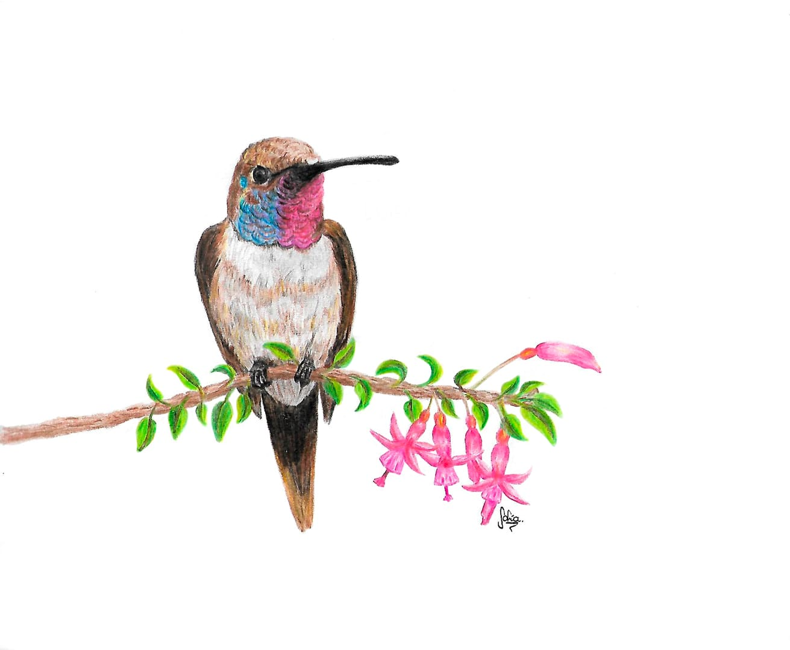
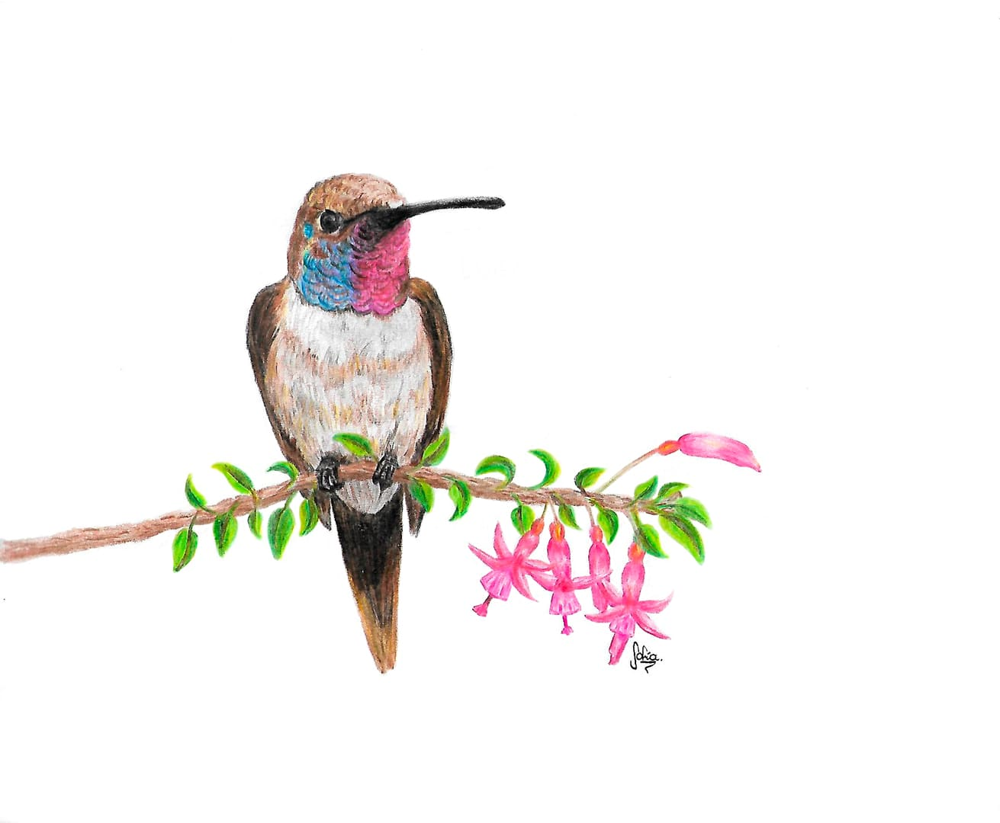

Sofiniscus
IV Región, La Serena
Mi nombre es Sofía Marambio, soy estudiante universitaria e ilustradora aficionada. Mis ilustraciones son generalmente personas del sexo femenino, ya que me gusta plasmar la verdadera belleza que nace desde lo imperfecto, y que cada rasgo que te hace diferente a los demás te hace única. Además también me gusta ilustrar mascotas y animalitos en general, siento que en cada retrato puedo plasmar la pureza y amor que demuestras estos seres lo cual me hace muy feliz. Actualmente estoy experimentando con nuevas técnicas y mejorando las que ya dominaba, espero en un futuro mi trabajo llegue a muchas personas y al observarlo puedan sentir lo que hay detrás de cada una de mis obras.


 
